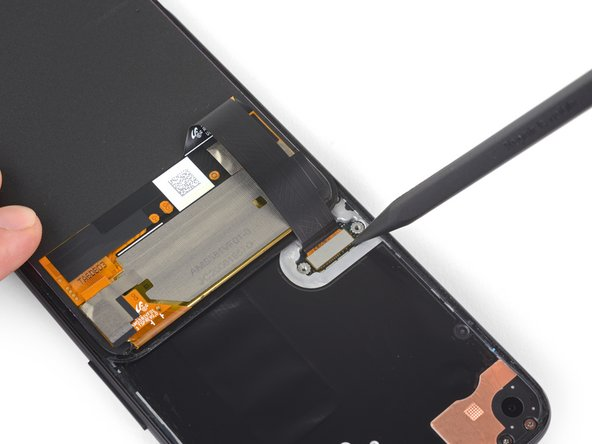

PCB construction, solder joints and ESD
Learn what solder must bond to, what heat does to a board, and how static discharge damages a device before a visible fault appears.
Pad, via and plane

Photo by John Fader. Original photo · CC BY-SA 3.0.

A pad is exposed copper with a solderable finish. A plated via joins selected layers. Planes spread current and conduct heat away from pads. Solder mask covers most of the copper, and the laminate bonds the layers together. A through-hole barrel may join inner layers, so bridging a lifted pad to the first visible trace may restore only one branch of the net. A multilayer repair starts with the actual net and all of its destinations.
Recognise the connector before moving it
A ribbon cable has a short row of exposed contacts. Its connector holds those contacts in alignment. The mechanics differ. If a plug resists, look up the socket and support it before trying another direction.

Photo by Zeroping, scaled for the course. Original photo · CC0.


Photo by Sam Omiotek for iFixit, scaled for the course. iFixit guide, step 14 · CC BY-NC-SA 3.0.
- Flat cable in a latch socket. A zero-insertion-force (ZIF) socket has a tab or bar that releases the cable. Open the latch in the direction shown by the manual and slide the cable out along its plane. Inspect the contacts and reseat the cable straight before locking the latch.
- Press connector. The small Pixel display plug mates straight down. Lift the plug only where its guide shows. Keep the tool clear of the soldered board socket and align the plug before seating it.
- Sliding connector. Some battery and fan plugs slide out along the board. Grip the housing as indicated by the guide and keep tension off the wires.
A connector levered off the board may tear the thin copper pads under it. Practise identifying the release style on an isolated spare before you put a tool against a populated board. iFixit’s connector types and release directions · P34’s visual screen practice.
Wetting and heat transfer
Watch on YouTube · Collin's Lab: Soldering · Adafruit Industries
Watch how the solder first flows onto a heated joint. Compare the resulting shape with the surface-mount joint in the photo.
Flux removes or disrupts oxides during heating so molten solder can wet the exposed metals. A thin intermetallic layer forms at the interface. Tip-to-joint contact area, a thin solder film and the thermal mass of the copper determine how quickly both surfaces reach soldering temperature. A large ground pad can need more heat delivery even when the iron display is unchanged. Heat applied for too long can weaken the pad bond, melt connectors or damage nearby components.
Inspect under magnification for wetting around both ends, alignment, bridges, lifted pads and disturbed neighbouring parts. Compare continuity from component terminal to a separate point on the routed net. Surface finish varies by solder alloy. Adafruit’s photographed solder defects.
Static discharge and protection parts
Charge on a person, tool or insulator can make a fast pulse when a conductive path appears. Even a pulse too small to feel can damage gate oxides or thin structures inside an IC. A dissipative work surface, grounded wrist strap connected to the designated ESD common point, suitable packaging and handling boards by their edges reduce voltage differences on an unpowered bench.
A TVS diode or protection array near a connector diverts surge energy along a designed path. A failed clamp can read short, and a good clamp can show a diode path. Signal lines can require low-capacitance arrays. Verify pinout, directionality, standoff voltage and capacitance before specifying a replacement. EOS/ESD Association workstation guidance.
Check yourself
A component body looks secure, but its net is open. Where do you measure?
With power off, measure between the component’s terminal and a separate exposed point on the same net, such as a confirmed test point or the next component. Checking across the solder blob alone can miss a break between pad and trace.